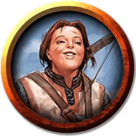

Пиратский боцман
Pirate Bosun
Средний Гуманоид (Любая раса), любое мировоззрение

Класс Доспеха 12 (проклёпанная кожа)
Хиты 27 (5к8 + 5)
Скорость 30 футов
| мод | спас | ||
|---|---|---|---|
| СИЛ | 16 | +3 | +3 |
| ЛОВ | 11 | +0 | +0 |
| ТЕЛ | 13 | +1 | +1 |
| мод | спас | ||
|---|---|---|---|
| ИНТ | 11 | +0 | +0 |
| МДР | 10 | +0 | +0 |
| ХАР | 13 | +1 | +1 |
Навыки Атлетика +5, Запугивание +3
Чувства пассивное Восприятие 10
Языки любой один язык (обычно Общий)
Опасность 1/2 (100 опыта)
Бонус мастерства +2
Особенности
Переносчик грузов. Боцман с преимуществом совершает проверки Силы.
Морская качка. Боцман с преимуществом совершает проверки характеристик и спасброски, чтобы не быть сбитым с ног.
Действия
Лёгкий молот. . Рукопашная или дальнобойная атака оружием: +5 к попаданию, досягаемость 5 футов или дистанция 20/60 футов, одна цель. Попадание: 5 (1к4 + 3) дробящего урона.
Крюк. . Рукопашная атака оружием: +5 к попаданию, досягаемость 5 футов, одна цель. Попадание: 7 (1к8 + 3) колющего урона, и цель схвачена (Сл высвобождения 13).
Описание
Боцману поручено организовать груз и экипаж на борту судна. Боцманы - способные бойцы, чей опыт в перевозке грузов и нанесении побоев делает их сильными противниками. Фол Фритхофф в "Зловещей тайне Солтмарша" - боцман, который охраняет груз на борту корабля контрабандистов. С тех пор, как произошел несчастный случай, он носил крюк на конце одной руки вместо кисти.